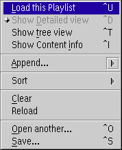

Clicking the second mouse button on the free space of a playlist, playlist manager or bookmark window opens the context menu of the entire list.

Load this playlist / Load all
Load the entire playlist into the player. This will stop any other playback if any.
Show detailed view
Opens the current topmost playlist in the playlist editor.
Show tree view
Opens the current playlist in the playlist manager view.
Show content info
Show a dialog with informations to the current playlist.
Append...

Appends one or multiple files, an URL from the Internet for streaming
or CD tracks to the current playlist.
Sort
This sub menu has options to sort the playlist by size, playing time, filename or song name and so on.
Clear
Clear the whole list.
This does not immediately modify or delete the file on disk.
Reload
Reload the list from the disk file or refresh the folder
content.
If the list in memory is modified you are prompted to commit the
reload.
Open another...
Opens another playlist. This
does not close the current window but creates a new window. However,
you cannot open two windows of the same playlist and the same view
(tree or detailed). In this case the existing window is only shown.
The view type of the new window is the same as the view
type of the current window.
Save...
Saves the current playlist.
If the list is a folder you can only save under a
different name. Saving to another file does not change the title of the
current window. This is comparable to 'Save copy as...' of other
applications.